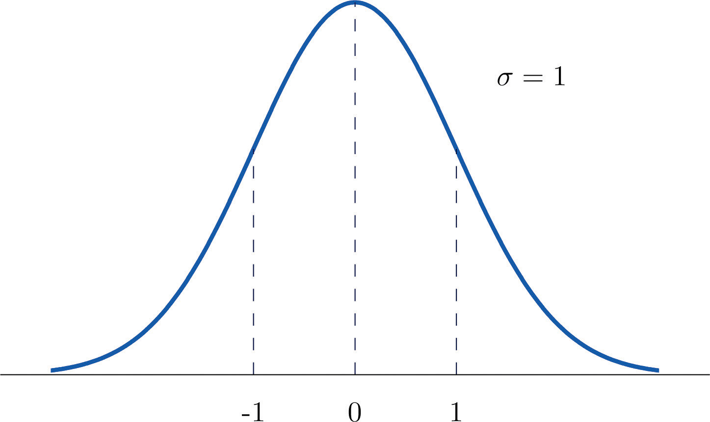
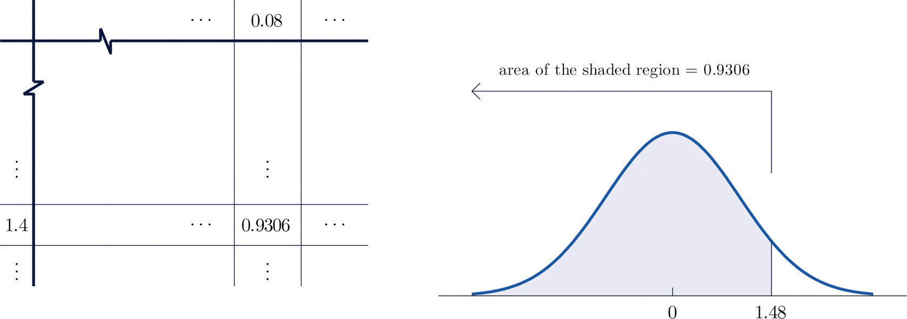
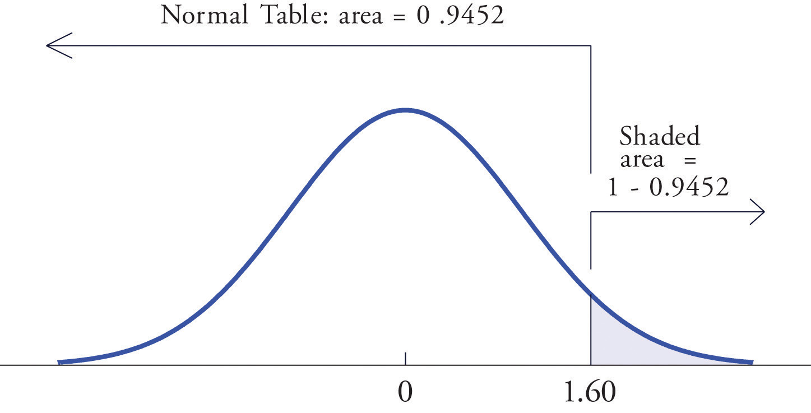
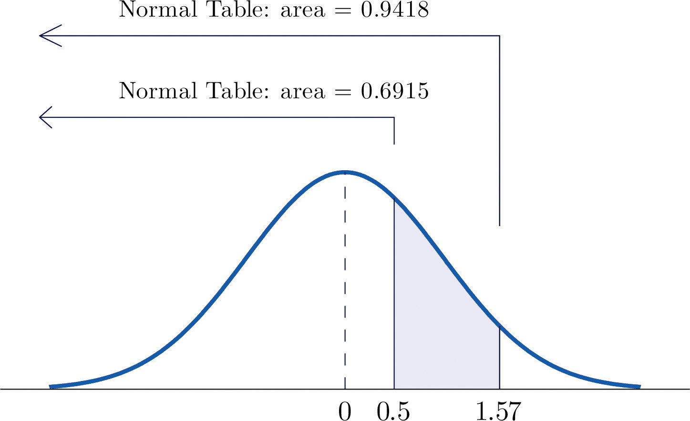
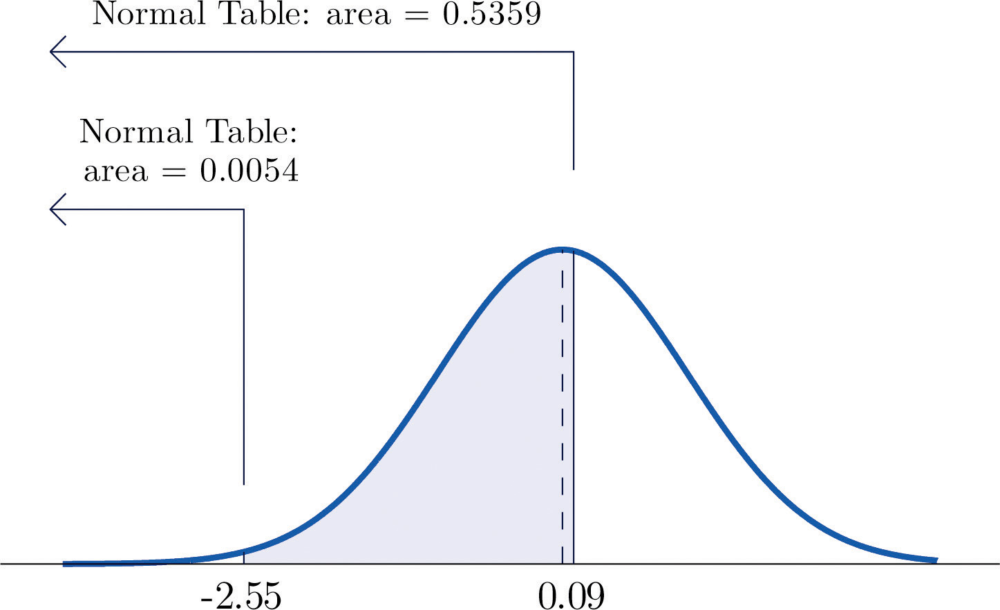

A standard normal random variableThe normal random variable with mean 0 and standard deviation 1. is a normally distributed random variable with mean μ = 0 and standard deviation σ = 1. It will always be denoted by the letter Z.
The density function for a standard normal random variable is shown in Figure 5.9 "Density Curve for a Standard Normal Random Variable".
Figure 5.9 Density Curve for a Standard Normal Random Variable
To compute probabilities for Z we will not work with its density function directly but instead read probabilities out of Figure 12.2 "Cumulative Normal Probability" in Chapter 12 "Appendix". The tables are tables of cumulative probabilities; their entries are probabilities of the form The use of the tables will be explained by the following series of examples.
Find the probabilities indicated, where as always Z denotes a standard normal random variable.
Solution:
Figure 5.10 Computing Probabilities Using the Cumulative Table
Find the probabilities indicated.
Solution:
Because the events Z > 1.60 and Z ≤ 1.60 are complements, the Probability Rule for Complements implies that
Since inclusion of the endpoint makes no difference for the continuous random variable Z, , which we know how to find from the table. The number in the row with heading 1.6 and in the column with heading 0.00 is 0.9452. Thus so
Figure 5.11 "Computing a Probability for a Right Half-Line" illustrates the ideas geometrically. Since the total area under the curve is 1 and the area of the region to the left of 1.60 is (from the table) 0.9452, the area of the region to the right of 1.60 must be
Figure 5.11 Computing a Probability for a Right Half-Line
The minus sign in −1.02 makes no difference in the procedure; the table is used in exactly the same way as in part (a). The number in the intersection of the row with heading −1.0 and the column with heading 0.02 is 0.1539. This means that , hence
Find the probabilities indicated.
Solution:
Figure 5.12 "Computing a Probability for an Interval of Finite Length" illustrates the ideas involved for intervals of this type. First look up the areas in the table that correspond to the numbers 0.5 (which we think of as 0.50 to use the table) and 1.57. We obtain 0.6915 and 0.9418, respectively. From the figure it is apparent that we must take the difference of these two numbers to obtain the probability desired. In symbols,
Figure 5.12 Computing a Probability for an Interval of Finite Length
The procedure for finding the probability that Z takes a value in a finite interval whose endpoints have opposite signs is exactly the same procedure used in part (a), and is illustrated in Figure 5.13 "Computing a Probability for an Interval of Finite Length". In symbols the computation is
Figure 5.13 Computing a Probability for an Interval of Finite Length
The next example shows what to do if the value of Z that we want to look up in the table is not present there.
Find the probabilities indicated.
Solution:
We attempt to compute the probability exactly as in Note 5.20 "Example 6" by looking up the numbers 1.13 and 4.16 in the table. We obtain the value 0.8708 for the area of the region under the density curve to left of 1.13 without any problem, but when we go to look up the number 4.16 in the table, it is not there. We can see from the last row of numbers in the table that the area to the left of 4.16 must be so close to 1 that to four decimal places it rounds to 1.0000. Therefore
Similarly, here we can read directly from the table that the area under the density curve and to the left of 2.15 is 0.9842, but −5.22 is too far to the left on the number line to be in the table. We can see from the first line of the table that the area to the left of −5.22 must be so close to 0 that to four decimal places it rounds to 0.0000. Therefore
The final example of this section explains the origin of the proportions given in the Empirical Rule.
Find the probabilities indicated.
Solution:
Using the table as was done in Note 5.20 "Example 6"(b) we obtain
Since Z has mean 0 and standard deviation 1, for Z to take a value between −1 and 1 means that Z takes a value that is within one standard deviation of the mean. Our computation shows that the probability that this happens is about 0.68, the proportion given by the Empirical Rule for histograms that are mound shaped and symmetrical, like the bell curve.
Using the table in the same way,
This corresponds to the proportion 0.95 for data within two standard deviations of the mean.
Similarly,
which corresponds to the proportion 0.997 for data within three standard deviations of the mean.
Use Figure 12.2 "Cumulative Normal Probability" to find the probability indicated.
Use Figure 12.2 "Cumulative Normal Probability" to find the probability indicated.
Use Figure 12.2 "Cumulative Normal Probability" to find the probability indicated.
Use Figure 12.2 "Cumulative Normal Probability" to find the probability indicated.
Use Figure 12.2 "Cumulative Normal Probability" to find the probability indicated.
Use Figure 12.2 "Cumulative Normal Probability" to find the probability indicated.
Use Figure 12.2 "Cumulative Normal Probability" to find the first probability listed. Find the second probability without referring to the table, but using the symmetry of the standard normal density curve instead. Sketch the density curve with relevant regions shaded to illustrate the computation.
Use Figure 12.2 "Cumulative Normal Probability" to find the first probability listed. Find the second probability without referring to the table, but using the symmetry of the standard normal density curve instead. Sketch the density curve with relevant regions shaded to illustrate the computation.
The probability that a standard normal random variable Z takes a value in the union of intervals (−∞, −a] ∪ [a, ∞), which arises in applications, will be denoted P(Z ≤ −a or Z ≥ a). Use Figure 12.2 "Cumulative Normal Probability" to find the following probabilities of this type. Sketch the density curve with relevant regions shaded to illustrate the computation. Because of the symmetry of the standard normal density curve you need to use Figure 12.2 "Cumulative Normal Probability" only one time for each part.
The probability that a standard normal random variable Z takes a value in the union of intervals (−∞, −a] ∪ [a, ∞), which arises in applications, will be denoted P(Z ≤ −a or Z ≥ a). Use Figure 12.2 "Cumulative Normal Probability" to find the following probabilities of this type. Sketch the density curve with relevant regions shaded to illustrate the computation. Because of the symmetry of the standard normal density curve you need to use Figure 12.2 "Cumulative Normal Probability" only one time for each part.